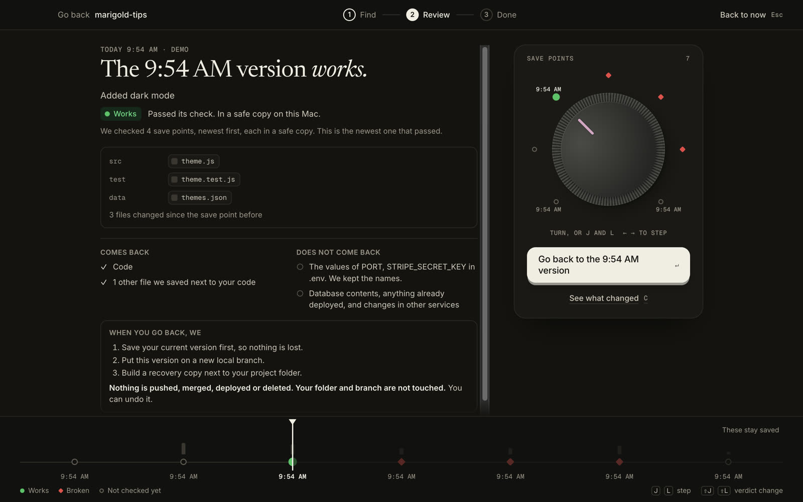

Early access. The tm CLI works today.
Get back the version
that passed your tests.
Time Machine saves your project before Claude Code acts, checks each save point with your own tests, and brings back the newest one that passes.
- cp-0005 FAIL
- cp-0004 FAIL
- cp-0003 PASS

If you don't write code
You ask an AI to change your app. Sometimes it breaks it.
Time Machine keeps a copy of your project before the AI touches it, checks which copies still work, and gives you the last good one back. You press buttons. You don't need the terminal.
-
1
It tells you when something broke
Every change gets a save point. The app shows plainly which ones work and which are broken, and the last one that worked.

Real screen, demo project. -
2
Turn the dial back
Pick the last version that works. Before anything happens, you see what comes back and what does not, like passwords or your database.

Real screen, demo project. -
3
Press Go back. Your work is safe.
The good version comes back as a separate copy. Your current folder is not touched, so nothing is lost, and you can undo it.

Real screen, demo project.


If you do
Three commands. One engine.
The Mac app, the tm CLI, the Claude Code hooks and the MCP server all call the same engine, so they never disagree.
-
01
Save
Before each prompt and before risky shell commands.
Claude Code's own rewind skips files changed by Bash. Time Machine saves first, outside your project folder, with a Git bundle.
Built Claude Code hooks
-
02
Check
Your own tests, in a separate copy.
$ tm find-good cp-0004 FAIL cp-0003 PASS newest that works
Built PASS or FAIL per save point
-
03
Bring back
The newest version that passes, on a new branch.
Your folder and current branch are never touched. Nothing is pushed, merged or deployed. Every report lists what did not come back.
Built
tm recover cp-0003
$ tm find-good cp-0006 FAIL The check failed with exit code 1. cp-0005 FAIL The check failed with exit code 1. cp-0004 FAIL The check failed with exit code 1. cp-0003 PASS The check passed. PASS cp-0003 is the newest version that works. $ tm recover cp-0003 Recovery ready for cp-0003. Nothing was pushed, merged or deployed. Branch tm/recover/cp-0003 Saved first cp-0007, your state before this recovery Not restored Secret values in .env: PORT, STRIPE_SECRET_KEY
tm demo on a synthetic project, shortened.Why it exists
The built-in rewind skips the shell.
"Checkpointing does not track files modified by Bash commands."
When an agent runs rm, mv or sed -i, that rewind cannot bring the files back. Time Machine saves before risky commands, outside your project, so a deleted folder does not take your save points with it.
Plain words
Four words you will see.
- Save point
- A copy of your project at one moment. Made before each request to the AI and before risky commands.
- Check
- Your own tests, run on a save point in a separate copy. The answer is Works or Broken.
- Go back
- The newest save point that works comes back as a separate copy. Your current work stays where it is.
- Does not come back
- Passwords and keys, databases, anything already published. Every result lists these, so nothing surprises you.